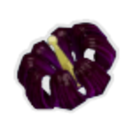

| Name | Image | Tier | Pool | Description | Flavor |
|---|
| Armor-Piercing Rounds |  | Common | | Deal an additional 20% damage in boss combat. | Cold Steel |
| Backup Mag |  | Common | | Gain a copy of a random relic you own. | Always carry extra. |
| Bison Steak |  | Common | | When you enter a room with a chest, gain 2 Max HP | Always carry extra. |
| Bustling Fungus |  | Common | | If you don't play a card this turn, gain 3Regen. if you complete combat without playing an attack, heal 10%Max HP | Engineers Best Friend |
| Delicate Watch |  | Common | | Deal 50% extra damage. riskofrelics:Fragile | Make sure to keep it wound |
| Lens Makers Glasses |  | Common | | Every 5 attacks, deal 50% extra damage | Seeing red. |
| Monster Tooth |  | Common | | When you kill an enemy, heal 2 HP. | Only a little stinky. |
| Roll of Pennies |  | Common | | Gain 15 gold when you lose HP. | "At least I'm getting paid after this." |
| Soldiers Syringe |  | Common | | Every 10 turns, gain [E] and draw 1 card. | RATATATATATA |
| Topaz Brooch |  | Common | | When you kill an enemy, gain 8 Block. | "the shield can be... reactivated, but we’d like to keep casualties to a minimum." |
| Tougher Times |  | Common | | 10% chance to dodge attacks. | Could use some love |
| Crowbar |  | Uncommon | | Deal +75% damage to enemies above 90% health. | Is this Half-Life 3? |
| Fuel Cell |  | Uncommon | | riskofrelics:Equipment gain 1riskofrelics:Charge | ZAP! |
| Kjaros Band |  | Uncommon | | If you hit an enemy for more than 20 damage, Apply 16riskofrelics:Burning to all enemies. | "Should passion die down,Should light be extinguished,Will you bring me patience?Will you die with me?"-The Syzygy of Io and Europa |
| Paul's Goat Hoof |  | Uncommon | | Every 3 turns, draw a card | Nyooom! |
| Polylute |  | Uncommon | | 25% chance on hit to deal 20% damage 3 times. riskofrelics:Corrupts Ukulele | d, d, d, a, G. A-e --- g-t-ing this? Th---'s m--e. |
| Recycler |  | Uncommon | | You may reroll relic rewards. | "Thank you for recycling!" |
| Safer Spaces |  | Uncommon | | Every 5 turns, gain Buffer, riskofrelics:Corrupts Tougher Times | Oddly... squishy? |
| Ukulele |  | Uncommon | | Attacking enemies has a 25% chance to hit all enemies for less damage. | And his music was electric. |
| Frost Relic |  | Rare | Blue | At the start of your turn, channel Frost equal to the number of enemies killed this combat. | Used for cooling prime grade arugula. |
| Hopoo Feather |  | Rare | | Skip the enemy's first turn. | "...Europan laws have cracked down heavily on poaching, with the intent to help the reemergence of the hopoo." |
| Mired Urn |  | Rare | | At the start of your turn, Deal 1 damage to the front enemy and heal 1 HP. | "The survey team went through a lot of trouble to bring this one back." |
| Her Biting Embrace |  | Special | | Become an aspect of ice. | You might want a blanket. |
| His Reassurance |  | Special | | Become an aspect of earth. | Emits a comforting glow. |
| Ifrit's Distinction |  | Special | | Become an aspect of fire. | spicy. |
| Irradiant Pearl |  | Special | | Increase your max hp by 30%, and at the start of battle gain 2 Strength and Dexterity | Extra shiny! |
| N'kuhana's Retort |  | Special | | Become an aspect of corruption. | Pure malice. |
| Pearl |  | Special | | Increase your max hp by 30% | Shiny! |
| Shared Design |  | Special | | Become an aspect of perfection. | It's hard to look away |
| Silence Between Two Strikes |  | Special | | Become an aspect of electricity. | Bzzt! Bzzt! Bzzt! |
| Spectral Circlet |  | Special | | Become an aspect of incorporeality. | You can't quite keep hold. |
| Brittle Crown |  | Boss | | When you attack an enemy, gain 5 gold, but when you lose hp, lose gold based on health lost. | Your death is fated. When you die - and you WILL die - I will be ready. |
| Corpsebloom |  | Boss | | Healing in battle is doubled, But it's applied over time. | a lingering bloom of death |
| Egocentrism |  | Boss | | At the start of your turn, deal 10 damage to a random enemy a number of times equal to this relic's counter. at the end of the battle, a random relic is destroyed and added to the counter. | "...Say something." |
| Eulogy Zero |  | Boss | | Relics have a 20% chance to become a boss relic instead. | "It's getting dark. If you get lost it's alright, for now. I hope you enjoy the shooting stars. Rest in peace." |
| Focused Convergence |  | Boss | | Bosses start with 50.0% health, but have less rewards. | Do not let it take you. Take it instead. Here. |
| Purity |  | Boss | | Gain [E] at the start of your turn. reduce rare card chance by 75%. | Conformity |
| Shaped Glass |  | Boss | | Double ALL damage. | "<He> sunders a construct into a thousand pieces." |
| Gesture of the Drowned |  | Shop | | When you draw a colorless card, play it. | "Fossils. Remnants. How cruel. " |
| Glowing Meteorite |  | Shop | | At the start of your turn, deal 5 damage to a random combatant. | "What a... peculiar piece of the stars." |